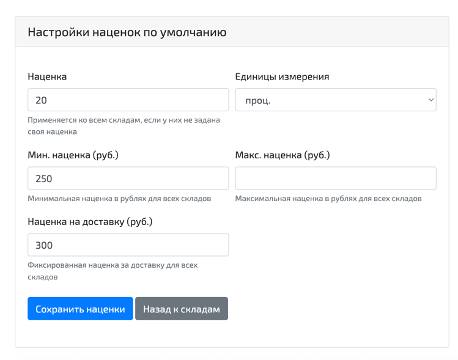

Подробная механика правил и расчета наценки
В этом документе подробно описано, как именно система выбирает правило, откуда берет значения наценки и в каком порядке рассчитывает итоговую розничную цену.
Здесь разобраны: - источники наценок; - приоритет между профилем, складом и правилами; - логика применения min/max; - добавление наценки на доставку; - особенности детальных настроек наценок в складе; - практические примеры итогового расчета.
1. Что делает система наценок
Система наценок определяет, какая розничная цена будет показана пользователю и попадет в выгрузки для конкретного предложения товара.
Она умеет: - задавать базовую наценку на уровне профиля; - уточнять эту наценку для конкретного склада; - переопределять результат правилами по критериям товара; - ограничивать наценку минимальным и максимальным значением; - добавлять отдельную наценку на доставку.
2. Из чего складывается итоговая цена
Итоговая розничная цена рассчитывается так:
- Берется оптовая цена предложения.
- К ней применяется основная наценка:
- либо в процентах;
- либо в рублях.
- Если задан минимальный порог наценки, наценка поднимается до него.
- Если задан максимальный порог наценки, наценка снижается до него.
- Если задана наценка на доставку, она прибавляется сверху.
- После этого получается розничная цена, которая округляется до целого числа.
Важно: - минимальная и максимальная наценка применяются к основной наценке; - наценка на доставку прибавляется уже после применения ограничений min/max.
Пример:

Допустим, оптовая цена товара составляет 1000 рублей. Сначала система рассчитывает основную наценку. Если задано 20%, то базовая наценка составит 200 рублей.
Далее система проверяет минимальное и максимальное ограничение. В этом примере минимальная наценка задана как 250 рублей. Это значит, что рассчитанная сумма 200 рублей слишком мала, поэтому вместо нее будет использовано минимальное значение 250 рублей.
После этого к наценке прибавляется доставка. Если наценка за доставку составляет 300 рублей, итоговая наценка будет равна 550 рублям.
В результате розничная цена товара составит 1550 рублей.
3. Источники наценок
Сейчас в системе есть 3 основных уровня, откуда может браться наценка:
- Общие настройки профиля.
- Настройки конкретного склада.
- Правила по критериям товара.
Дополнительно есть особый вид правил внутри склада: детальные настройки наценок в складе (advanced_settings).
По смыслу это тоже правила по критериям, но более простой формы.
4. Главный принцип приоритета
Наценка работает по следующему приоритету:
- Сначала берутся настройки профиля.
- Затем они перекрываются настройками склада.
- Затем итог перекрывается правилами по критериям, если товар под них подходит.
Это ключевое правило всей системы.
Пример:
- в профиле стоит 5%
- у склада стоит 10%
- есть правило: для шин диаметра 16 ставить 20%
Если пришла шина диаметра 16 с этого склада, итоговая наценка будет 20%.
5. Приоритет считается отдельно по каждому параметру
Система смотрит не на наценку целиком, а на каждый параметр отдельно.
Отдельно рассчитываются: - основная наценка; - единицы измерения наценки: проценты или рубли; - минимальная наценка; - максимальная наценка; - наценка на доставку.
Это означает, что часть параметров может прийти из одного уровня, а часть из другого.
Пример:
- в профиле задана максимальная наценка 500
- у склада задана основная наценка 15%
- в правиле задана только доставка 100
Тогда итог будет таким: - основная наценка: со склада - максимальная наценка: из профиля - доставка: из правила
6. Какие уровни настроек существуют
6.1. Общие настройки профиля
Это базовые значения для всего профиля.
Они применяются как отправная точка, если на уровне склада или правила ничего не задано.
На уровне профиля можно задать: - основную наценку; - единицы измерения наценки; - минимальную наценку; - максимальную наценку; - наценку на доставку.
6.2. Настройки склада
Это настройки для конкретного склада внутри профиля.
Они перекрывают значения профиля.
На уровне склада можно задать: - основную наценку; - единицы измерения; - минимальную наценку; - максимальную наценку; - наценку на доставку.
Если на складе параметр не заполнен, система берет его из профиля.
6.3. Правила по критериям
Это самый приоритетный уровень.
Если товар подходит под правило, параметры из правила перекрывают значения профиля и склада.
Правило может задавать: - основную наценку; - единицы измерения; - минимальную наценку; - максимальную наценку; - наценку на доставку.
Правило может быть заполнено частично. Если в правиле задан не весь набор параметров, недостающие значения будут взяты со склада или из профиля.
7. Какие правила бывают
Сейчас в системе фактически работают два вида правил:
- Правила по критериям в профиле.
- Детальные настройки наценок в складе.
Оба вида относятся к уровню "правила по критериям", то есть имеют более высокий приоритет, чем обычная наценка склада и обычная наценка профиля.
Разница между ними такая:
7.1. Правила по критериям в профиле
Это более гибкие правила.
Они умеют: - использовать несколько условий одновременно; - задавать разные параметры наценки; - работать и для шин, и для дисков; - использовать приоритет между правилами.
7.2. Детальные настройки наценок в складе
Это упрощенные правила на уровне склада.
Сейчас этот функционал считается устаревшим. Если есть возможность, новые настройки наценок желательно задавать через правила наценок в профиле, так как они гибче, понятнее в сопровождении и позволяют централизованно управлять логикой расчета.
Они настраиваются: - по брендам шин; - по категориям шин; - по брендам дисков; - по категориям дисков.
Для них можно задавать: - основную наценку; - единицы измерения; - ценовые диапазоны.
Важно: - детальные настройки наценок в складе не задают минимальную наценку; - детальные настройки наценок в складе не задают максимальную наценку; - детальные настройки наценок в складе не задают наценку на доставку.
То есть детальные настройки наценок в складе влияют только на основную наценку и на то, в чем она задана: в процентах или в рублях.
8. Какие критерии можно задать в правилах
8.1. Для шин
Можно использовать: - сезон; - категорию; - бренд; - диаметр; - оптовую цену; - код товара; - признак распродажи.
8.2. Для дисков
Можно использовать: - тип диска; - категорию; - бренд; - диаметр; - оптовую цену; - код товара; - признак распродажи.
9. Какие операторы доступны в правилах
9.1. Для сезонов, категорий, брендов и типов
Доступны:
- == равно;
- != не равно.
9.2. Для диаметра
Доступны:
- == равно;
- != не равно;
- > больше;
- < меньше.
9.3. Для оптовой цены
Доступны:
- == равно;
- > больше;
- < меньше.
9.4. Для кода товара
Доступен только:
- == равно.
9.5. Для распродажи
Доступен только:
- == равно.
То есть можно проверить, например:
- товар на распродаже;
- товар не на распродаже напрямую через != задать нельзя;
- вместо этого используется условие sale == Нет.
10. Как правило понимает, подходит товар или нет
Правила объединяются в группы.
Логика такая: - внутри одной группы все условия должны выполниться одновременно; - если подошла хотя бы одна группа, правило считается подходящим.
Это можно понимать так: - внутри группы работает логика "И"; - между группами работает логика "ИЛИ".
Пример:
Группа 1:
- бренд = Michelin
- диаметр = 16
Группа 2:
- бренд = Pirelli
- распродажа = Да
Если товар подходит под группу 1 или под группу 2, будет применена соответствующая наценка этой группы.
11. Как выбирается одно правило, если подходит несколько
Если одновременно подходят несколько групп правил, система выбирает одну.
Сейчас действует такой порядок:
- сначала смотрится поле priority;
- чем меньше число, тем выше приоритет;
- правило с priority = 0 важнее, чем правило с priority = 5.
Это важный нюанс: в текущей реализации более приоритетным считается меньшее число.
Если у подходящих правил одинаковый priority, раньше сработает то, которое было создано раньше.
12. Как работают правила для шин и дисков
Правило не применяется к неподходящему типу товара.
Например: - правило для шин не будет применяться к дискам; - правило для дисков не будет применяться к шинам.
Если в одной группе смешать несовместимые условия, такая группа не сработает.
Пример: - в группе есть условие по сезону шин; - и одновременно условие по типу диска.
Такая группа не подходит ни шине, ни диску и фактически не будет применяться.
13. Как работают детальные настройки наценок в складе
Детальные настройки наценок в складе нужны для быстрых наценок по бренду или категории на уровне склада.
Они могут быть заданы для: - брендов шин; - категорий шин; - брендов дисков; - категорий дисков.
Логика работы такая:
- Система ищет совпадение по нужному бренду или категории.
- Если для этого совпадения заданы ценовые диапазоны, система ищет диапазон, в который попадает оптовая цена.
- Если диапазон найден, берется наценка из диапазона.
- Если диапазон не найден, берется основная наценка, указанная у этого бренда или категории.
Важно: - для одного товара берется первое подходящее направление из списка проверок; - детальные настройки наценок в складе в текущей логике перекрывают обычную наценку склада и профиля; - если одновременно есть детальные настройки наценок в складе и правило по критериям профиля, приоритет зависит от того, какой именно параметр задан: - для основной наценки и единиц измерения сначала применяются детальные настройки наценок в складе; - если детальные настройки наценок в складе не дали значение, тогда используется правило по критериям; - для min/max/delivery детальные настройки наценок в складе не участвуют вообще.
Проще говоря: - детальные настройки наценок в складе сильнее обычной наценки склада; - детальные настройки наценок в складе сильнее обычной наценки профиля; - по основной наценке они также сильнее обычных правил профиля.
14. Что происходит, если какая-то настройка не заполнена
Система всегда пытается взять значение с ближайшего доступного уровня.
Пример по основной наценке: - сначала смотрим детальные настройки наценок в складе, если они дали значение; - если нет, смотрим правило по критериям; - если нет, смотрим склад; - если нет, смотрим профиль.
Пример по минимальной наценке: - сначала смотрим правило по критериям; - если нет, смотрим склад; - если нет, смотрим профиль.
Пример по доставке: - сначала смотрим правило по критериям; - если нет, смотрим склад; - если нет, смотрим профиль.
15. В чем можно задавать наценку
Основная наценка может быть задана: - в рублях; - в процентах.
Если значение задано в процентах, наценка считается как процент от оптовой цены.
Пример:
- оптовая цена 2000
- наценка 15%
- наценка в рублях будет 300
Если значение задано в рублях, оно просто прибавляется как фиксированная сумма.
Пример:
- оптовая цена 2000
- наценка 500 руб.
- итоговая наценка будет 500
16. Что будет, если основная наценка нигде не задана
Если основная наценка не задана ни в одном источнике:
- основная наценка считается равной 0;
- при этом min/max/delivery все равно могут повлиять на итог.
Пример:
- основной наценки нет;
- минимальная наценка задана как 300;
Тогда будет применена наценка 300, даже без основной процентной или рублевой наценки.
17. Как округляется цена
После всех расчетов итоговая цена округляется до целого числа.
В текущей реализации порог округления смещен так, что дробная часть:
- 0.40 и выше округляется вверх;
- ниже 0.40 округляется вниз.
Для пользователя это значит, что цена на выходе всегда будет целым числом.
18. Практические примеры
Пример 1. Только профиль
- в профиле стоит
10% - на складе ничего не задано
- правил нет
Итог: применяется 10%.
Пример 2. Склад перекрывает профиль
- в профиле стоит
10% - на складе стоит
15% - правил нет
Итог: применяется 15%.
Пример 3. Правило перекрывает склад
- в профиле стоит
10% - на складе стоит
15% - есть правило: для бренда
Michelinставить25% - товар подходит под правило
Итог: применяется 25%.
Пример 4. Правило задает только доставку
- в профиле стоит
10% - на складе стоит
15% - есть правило, где заполнена только доставка
100
Итог:
- основная наценка берется со склада: 15%
- доставка берется из правила: 100
Пример 5. Детальные настройки наценок в складе по бренду
- у склада для бренда
Michelinзадана наценка800 руб. - у склада обычная наценка
10% - в профиле обычная наценка
5%
Для товара бренда Michelin сработает 800 руб. из детальных настроек наценок в складе.
19. На что стоит обратить внимание при настройке
- Правила имеют самый высокий приоритет, но детальные настройки наценок в складе внутри логики основных наценок тоже очень сильны и могут перекрывать обычные правила профиля по основной наценке.
- Приоритет правил работает наоборот привычному ожиданию: меньшее число важнее большего.
- Не все виды правил умеют задавать все параметры.
- Один и тот же итог может собираться из нескольких уровней одновременно.
- Если смешать в одной группе условия для шин и дисков, такая группа не сработает.
20. Краткое резюме
Если упростить систему до одного правила, она работает так:
- Профиль задает базу.
- Склад уточняет базу.
- Правила по критериям делают финальное переопределение.
- Для основной наценки особую роль играют детальные настройки наценок в складе, потому что они проверяются раньше обычных правил по критериям.
Если нужно предсказуемое поведение, лучше всегда проверять: - есть ли у склада детальные настройки наценок; - есть ли подходящее правило; - какие параметры реально заполнены на каждом уровне.